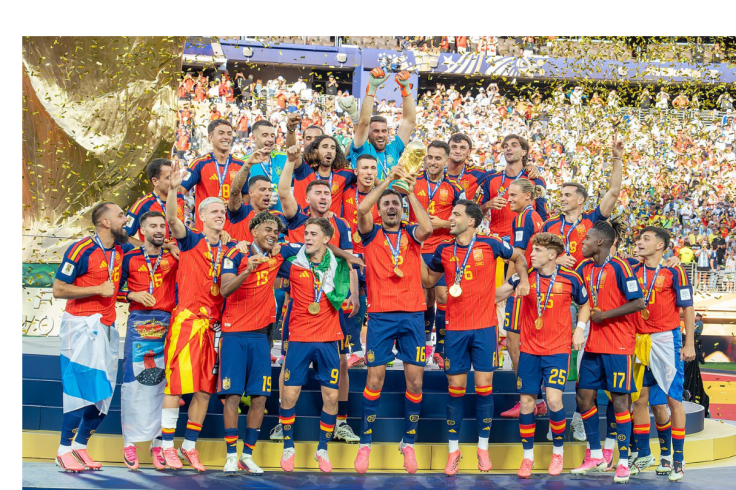

History of the Spain national football team
The Spanish national football team in the 1920 Summer Olympics in Antwerp
Spaniards celebrating the 2010 FIFA World Cup in Salamanca.
Spain has been a member of FIFA since its founding in 1904, even though the Spanish Football Federation was first established in 1909. The first Spanish national football team was constituted in 1920, with the main objective of finding a team that would represent Spain at the 1920 Summer Olympics held in Belgium in that same year. Spain made their debut at the tournament on 28 August 1920 against Denmark, silver medalists at the last two Olympic tournaments. Spain won that match 1–0 and eventually finished with the silver medal.[20] Spain qualified for their first FIFA World Cup in 1934, defeating Brazil in their first game and losing in a replay to the hosts and eventual champions Italy in the quarter-finals.[21] The Spanish Civil War and World War II prevented Spain from playing any competitive matches between the 1934 World Cup and the 1950 edition's qualifiers. At the 1950 finals in Brazil, they topped their group and advanced to the final round, where they finished fourth.[22] Until 2010, this had been Spain's highest finish at the FIFA World Cup.[23]
The 2026 FIFA World Cup[A] was the 23rd FIFA World Cup, the quadrennial international men's soccer championship contested by the national teams of the member associations of FIFA. The tournament began on June 11, 2026, and concluded on July 19.[3] It was jointly hosted by 16 cities—11 in the United States, 3 in Mexico, and 2 in Canada. The tournament was the first FIFA World Cup to be hosted by three countries and the first to include 48 teams, an expansion from the previous 32-team format.[4]
The 2026 tournament was the second World Cup to be hosted by multiple nations, after 2002. Mexico became the first country to host the World Cup three times, having hosted the 1970 and 1986 tournaments.[5] The United States previously hosted the World Cup in 1994, while it was Canada's first time hosting the tournament.[5] The event returned to its traditional June–July schedule after the 2022 World Cup in Qatar, which was uniquely held in November and December to avoid Qatar's extreme summer heat.[6] Canada, Mexico